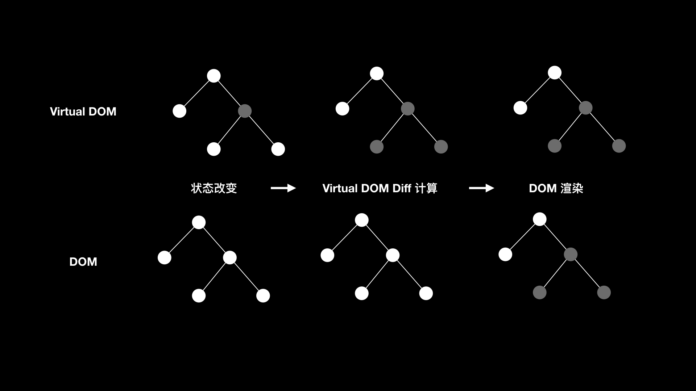

- 00 开篇词 锚定一个点，然后在这个点上深耕.md
- 01 建立你自己的iOS开发知识体系.md
- 02 App 启动速度怎么做优化与监控？.md
- 03 Auto Layout 是怎么进行自动布局的，性能如何？.md
- 04 项目大了人员多了，架构怎么设计更合理？.md
- 05 链接器：符号是怎么绑定到地址上的？.md
- 06 App 如何通过注入动态库的方式实现极速编译调试？.md
- 07 Clang、Infer 和 OCLint ，我们应该使用谁来做静态分析？.md
- 08 如何利用 Clang 为 App 提质？.md
- 09 无侵入的埋点方案如何实现？.md
- 10 包大小：如何从资源和代码层面实现全方位瘦身？.md
- 11 热点问题答疑（一）：基础模块问题答疑.md
- 12 iOS 崩溃千奇百怪，如何全面监控？.md
- 13 如何利用 RunLoop 原理去监控卡顿？.md
- 14 临近 OOM，如何获取详细内存分配信息，分析内存问题？.md
- 15 日志监控：怎样获取 App 中的全量日志？.md
- 16 性能监控：衡量 App 质量的那把尺.md
- 17 远超你想象的多线程的那些坑.md
- 18 怎么减少 App 电量消耗？.md
- 19 热点问题答疑（二）：基础模块问题答疑.md
- 20 iOS开发的最佳学习路径是什么？.md
- 21 除了 Cocoa，iOS还可以用哪些 GUI 框架开发？.md
- 22 细说 iOS 响应式框架变迁，哪些思想可以为我所用？.md
- 23 如何构造酷炫的物理效果和过场动画效果？.md
- 24 A_B 测试：验证决策效果的利器.md
- 25 怎样构建底层的发布和订阅事件总线？.md
- 26 如何提高 JSON 解析的性能？.md
- 27 如何用 Flexbox 思路开发？跟自动布局比，Flexbox 好在哪？.md
- 28 怎么应对各种富文本表现需求？.md
- 29 如何在 iOS 中进行面向测试驱动开发和面向行为驱动开发？.md
- 30 如何制定一套适合自己团队的 iOS 编码规范？.md
- 31 iOS 开发学习资料和书单推荐.md
- 32 热点问题答疑（三）.md
- 33 iOS 系统内核 XNU：App 如何加载？.md
- 34 iOS 黑魔法 Runtime Method Swizzling 背后的原理.md
- 35 libffi：动态调用和定义 C 函数.md
- 36 iOS 是怎么管理内存的？.md
- 37 如何编写 Clang 插件？.md
- 38 热点问题答疑（四）.md
- 39 打通前端与原生的桥梁：JavaScriptCore 能干哪些事情？.md
- 40 React Native、Flutter 等，这些跨端方案怎么选？.md
- 41 原生布局转到前端布局，开发思路有哪些转变？.md
- 42 iOS原生、大前端和Flutter分别是怎么渲染的？.md
- 43 剖析使 App 具有动态化和热更新能力的方案.md
- 用户故事 我是如何学习这个专栏的？.md
- 结束语 慢几步，深几度.md
22 细说 iOS 响应式框架变迁，哪些思想可以为我所用？
你好，我是戴铭。
说到iOS 响应式框架，最开始被大家知道的是 ReactiveCocoa（简称RAC），后来比较流行的是 RxSwift。但据我了解，iOS原生开发使用 ReactiveCocoa框架的团队并不多，而前端在推出React.js 后，响应式思路遍地开花。
那么，响应式框架到底是什么，为什么在iOS原生开发中没被广泛采用，却能在前端领域得到推广呢？
我们先来看看响应式框架，它指的是能够支持响应式编程范式的框架。使用了响应式框架，你在编程时就可以使用数据流传播数据的变化，响应这个数据流的计算模型会自动计算出新的值，将新的值通过数据流传给下一个响应的计算模型，如此反复下去，直到没有响应者为止。
React.js框架的底层有个 Virtual DOM（虚拟文档对象模型），页面组件状态会和 Virtual DOM 绑定，用来和 DOM（文档对象模型）做映射与转换。当组件状态更新时，Virtual DOM 就会进行 Diff 计算，最终只将需要渲染的节点进行实际 DOM 的渲染。
JavaScript 每次操作 DOM 都会全部重新渲染，而Virtual DOM 相当于 JavaScript 和 DOM 之间的一个缓存，JavaScript 每次都是操作这个缓存，对其进行 Diff 和变更，最后才将整体变化对应到 DOM 进行最后的渲染，从而减少没必要的渲染。
React.js 的 Virtual DOM 映射和转换 DOM 的原理，如下图所示。我们一起通过原理，来分析一下它的性能提升。

- 可以看出，操作 Virtual DOM 时并不会直接进行 DOM 渲染，而是在完成了 Diff 计算得到所有实际变化的节点后才会进行一次 DOM 操作，然后整体渲染。而 DOM 只要有操作就会进行整体渲染。直接在 DOM 上进行操作是非常昂贵的，所以视图组件会和 Virtual DOM 绑定，状态的改变直接更改 Virtual DOM。Virtual DOM 会检查两个状态之间的差异，进行最小的修改，所以 React.js 具有很好的性能。也正是因为性能良好，React.js才能够在前端圈流行起来。
而反观iOS，ReactiveCocoa框架的思路，其实与React.js中页面组件状态和 Virtual DOM 绑定、同步更新的思路是一致的。那为什么 ReactiveCocoa 在iOS原生开发中就没流行起来呢？
我觉得，主要原因是前端DOM 树的结构非常复杂，进行一次完整的 DOM 树变更，会带来严重的性能问题，而有了 Virtual DOM 之后，不直接操作 DOM 可以避免对整个 DOM 树进行变更，使得我们不用再担忧应用的性能问题。
但是，这种性能问题并不存在于iOS 原生开发。这，主要是得易于 Cocoa Touch 框架的界面节点树结构要比 DOM 树简单得多，没有前端那样的历史包袱。
与前端 DOM 渲染机制不同，Cocoa Touch 每次更新视图时不会立刻进行整个视图节点树的重新渲染，而是会通过 setNeedsLayout 方法先标记该视图需要重新布局，直到绘图循环到这个视图节点时才开始调用 layoutSubviews 方法进行重新布局，最后再渲染。
所以说，ReactiveCocoa框架并没有为 iOS 的 App 带来更好的性能。当一个框架可有可无，而且没有明显收益时，一般团队是没有理由去使用的。那么，像 ReactiveCocoa 这种响应式思想的框架在 iOS 里就没有可取之处了吗？
我觉得并不是。今天，我就来跟你分享下，ReactiveCocoa 里有哪些思想可以为我所用，帮我们提高开发效率？
ReactiveCocoa 是将函数式编程和响应式编程结合起来的库，通过函数式编程思想建立了数据流的通道，数据流动时会经过各种函数的处理最终到达和数据绑定的界面，由此实现了数据变化响应界面变化的效果。
Monad
ReactiveCocoa 是采用号称纯函数式编程语言里的 Monad 设计模式搭建起来的，核心类是 RACStream。我们使用最多的 RACSignal（信号类，建立数据流通道的基本单元） ，就是继承自RACStream。RACStream 的定义如下：
typedef RACStream * (^RACStreamBindBlock)(id value, BOOL *stop);
/// An abstract class representing any stream of values.
///
/// This class represents a monad, upon which many stream-based operations can
/// be built.
///
/// When subclassing RACStream, only the methods in the main @interface body need
/// to be overridden.
@interface RACStream : NSObject
+ (instancetype)empty;
+ (instancetype)return:(id)value;
- (instancetype)bind:(RACStreamBindBlock (^)(void))block;
- (instancetype)concat:(RACStream *)stream;
- (instancetype)zipWith:(RACStream *)stream;
@end
通过定义的注释可以看出，RACStream的作者也很明确地写出了RACStream 类表示的是一个 Monad，所以我们在 RACStream 上可以构建许多基于数据流的操作；RACStreamBindBlock，就是用来处理 RACStream 接收到数据的函数。那么，Monad 就一定是好的设计模式吗？
从代码视觉上看，Monad 为了避免赋值语句做了很多数据传递的管道工作。这样的话，我们在分析问题时，就很容易从代码层面清晰地看出数据流向和变化。而如果是赋值语句，在分析数据时就需要考虑数据状态和生命周期，会增加调试定位的成本，强依赖调试工具去观察变量。
从语言发展来看，Monad 虽然可以让上层接口看起来很简洁，但底层的实现却犹如一团乱麻。为了达到“纯”函数效果，Monad底层将各种函数的参数和返回值封装在了类型里，将本来可以通过简单数据赋值给变量记录的方式复杂化了。
不过无论是赋值方式还是 Monad 方式，编译后生成的代码都是一样的。王垠在他的博文“函数式语言的宗教”里详细分析了 Monad，并且写了两段分别采用赋值和函数式的代码，编译后的机器码实际上是一样的。如果你感兴趣的话，可以看一下这篇文章。
所以，如果你不想引入 ReactiveCocoa 库，还想使用函数响应式编程思想来开发程序的话，完全不用去重新实现一个采用 Monad 模式的 RACStream，只要在上层按照函数式编程的思想来搭建数据流管道，在下层使用赋值方式来管理数据就可以了。并且，采用这种方式，可能会比 Monad 这种“纯”函数来得更加容易。
函数响应式编程例子
接下来，我通过一个具体的案例来和你说明下，如何搭建一个不采用 Monad 模式的函数响应式编程框架。
这个案例要完成的功能是：添加学生基本信息，添加完学生信息后，通过按钮点击累加学生分数，每次点击按钮分数加5；所得分数在30分内，颜色显示为灰色；分数在30到70分之间，颜色显示为紫色；分数在70分内，状态文本显示不合格；超过70分，分数颜色显示为红色，状态文本显示合格。初始态分数为0，状态文本显示未设置。
这个功能虽然不难完成，但是如果我们将这些逻辑都写在一起，那必然是条件里套条件，当要修改功能时，还需要从头到尾再捋一遍。
如果把逻辑拆分成小逻辑放到不同的方法里，当要修改功能时，查找起来也会跳来跳去，加上为了描述方法内逻辑，函数名和参数名也需要非常清晰。这，无疑加重了开发和维护成本，特别是函数里面的逻辑被修改了后，我们还要对应着修改方法名。否则，错误的方法名，将会误导后来的维护者。
那么，使用函数响应式编程方式会不会好一些呢？
这里，我给出了使用函数响应式编程方式的代码，你可以对比看看是不是比条件里套条件和方法里套方法的写法要好。
首先，创建一个学生的记录，在创建记录的链式调用里添加一个处理状态文本显示的逻辑。代码如下：
// 添加学生基本信息
self.student = [[[[[SMStudent create]
name:@"ming"]
gender:SMStudentGenderMale]
studentNumber:345]
filterIsASatisfyCredit:^BOOL(NSUInteger credit){
if (credit >= 70) {
// 分数大于等于 70 显示合格
self.isSatisfyLabel.text = @"合格";
self.isSatisfyLabel.textColor = [UIColor redColor];
return YES;
} else {
// 分数小于 70 不合格
self.isSatisfyLabel.text = @"不合格";
return NO;
}
}];
可以看出，当分数小于70时，状态文本会显示为“不合格”，大于等于70时会显示为“合格”。
接下来，针对分数，我再创建一个信号，当分数有变化时，信号会将分数传递给这个分数信号的两个订阅者。代码如下：
// 第一个订阅的credit处理
[self.student.creditSubject subscribeNext:^(NSUInteger credit) {
NSLog(@"第一个订阅的credit处理积分%lu",credit);
self.currentCreditLabel.text = [NSString stringWithFormat:@"%lu",credit];
if (credit < 30) {
self.currentCreditLabel.textColor = [UIColor lightGrayColor];
} else if(credit < 70) {
self.currentCreditLabel.textColor = [UIColor purpleColor];
} else {
self.currentCreditLabel.textColor = [UIColor redColor];
}
}];
// 第二个订阅的credit处理
[self.student.creditSubject subscribeNext:^(NSUInteger credit) {
NSLog(@"第二个订阅的credit处理积分%lu",credit);
if (!(credit > 0)) {
self.currentCreditLabel.text = @"0";
self.isSatisfyLabel.text = @"未设置";
}
}];
可以看出，这两个分数信号的订阅者分别处理了两个功能逻辑：
- 第一个处理的是分数颜色；
- 第二个处理的是初始状态下状态文本的显示逻辑。
整体看起来，所有的逻辑都围绕着分数这个数据的更新自动流动起来，也能够很灵活地通过信号订阅的方式进行归类处理。
采用这种编程方式，上层实现方式看起来类似于 ReactiveCocoa，而底层实现却非常简单，将信号订阅者直接使用赋值的方式赋值给一个集合进行维护，而没有使用 Monad 方式。底层对信号和订阅者的实现代码如下所示：
@interface SMCreditSubject : NSObject
typedef void(^SubscribeNextActionBlock)(NSUInteger credit);
+ (SMCreditSubject *)create;
// 发送信号
- (SMCreditSubject *)sendNext:(NSUInteger)credit;
// 接收信号
- (SMCreditSubject *)subscribeNext:(SubscribeNextActionBlock)block;
@end
@interface SMCreditSubject()
@property (nonatomic, assign) NSUInteger credit; // 积分
@property (nonatomic, strong) SubscribeNextActionBlock subscribeNextBlock; // 订阅信号事件
@property (nonatomic, strong) NSMutableArray *blockArray; // 订阅信号事件队列
@end
@implementation SMCreditSubject
// 创建信号
+ (SMCreditSubject *)create {
SMCreditSubject *subject = [[self alloc] init];
return subject;
}
// 发送信号
- (SMCreditSubject *)sendNext:(NSUInteger)credit {
self.credit = credit;
if (self.blockArray.count > 0) {
for (SubscribeNextActionBlock block in self.blockArray) {
block(self.credit);
}
}
return self;
}
// 订阅信号
- (SMCreditSubject *)subscribeNext:(SubscribeNextActionBlock)block {
if (block) {
block(self.credit);
}
[self.blockArray addObject:block];
return self;
}
#pragma mark - Getter
- (NSMutableArray *)blockArray {
if (!_blockArray) {
_blockArray = [NSMutableArray array];
}
return _blockArray;
}
如上面代码所示，订阅者都会记录到 blockArray 里，block 的类型是 SubscribeNextActionBlock。
最终，我们使用函数式编程的思想，简单、高效地实现了这个功能。这个例子完整代码，你可以点击这个链接查看。
小结
今天这篇文章，我和你分享了ReactiveCocoa 这种响应式编程框架难以在 iOS 原生开发中流行开的原因。
从本质上看，响应式编程没能提高App的性能，是其没能流行起来的主要原因。
在调试上，由于 ReactiveCocoa框架采用了 Monad 模式，导致其底层实现过于复杂，从而在方法调用堆栈里很难去定位到问题。这，也是ReactiveCocoa没能流行起来的一个原因。
但， ReactiveCocoa的上层接口设计思想，可以用来提高代码维护的效率，还是可以引入到 iOS 开发中的。
ReactiveCocoa里面还有很多值得我们学习的地方，比如说宏的运用。对此感兴趣的话，你可以看看sunnyxx的那篇《Reactive Cocoa Tutorial [1] = 神奇的Macros》。
对于 iOS 开发来说，响应式编程还有一个很重要的技术是 KVO，使用 KVO 来实现响应式开发的范例可以参考我以前的一个 demo。如果你有关于KVO的问题，也欢迎在评论区给我留言。
课后作业
在今天这篇文章里面，我和你聊了Monad 的很多缺点，不知道你是如何看待Monad的，在评论区给我留言分享下你的观点吧。
感谢你的收听，欢迎你在评论区给我留言分享你的观点，也欢迎把它分享给更多的朋友一起阅读。
© 2019 - 2023 Liangliang Lee. Powered by gin and hexo-theme-book.